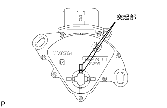
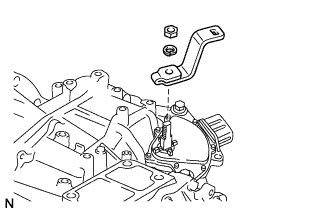
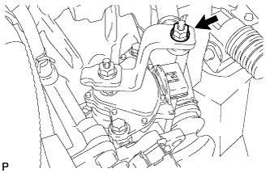
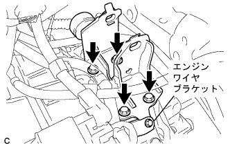
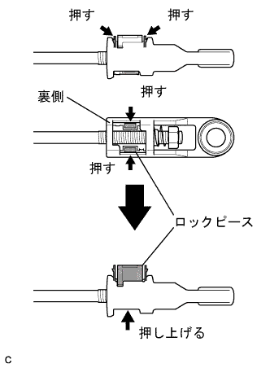

Neutral Start Switch Assembly (U660E) Installation |
| 1. Install Neutral Start Switch Assembly |
 |
Align the 2 protrusions of the neutral start switch.
 |
Install the neutral start switch to the control shaft with the 2 bolts.
 |
Install the control shaft lever to the control shaft with the nut and washer.
Connect the connector to the neutral start switch.
 |
Connect the transmission control cable to the control shaft lever with the nut.
 |
Connect the transmission cable to the transmission cable bracket with a new clip.
| 2. Install Engine Mounting Bracket LH |
 |
Install the engine mounting bracket LH to the transaxle with the 4 bolts.
Install the engine wire bracket to the engine mounting bracket LH with the bolt.
| 3. Install Engine Mounting Insulator LH |
 |
Install the engine mounting insulator LH with the 4 bolts.
| 4. Connect Engine Mounting Bracket LH |
 |
Install the engine mounting insulator LH to the engine mounting bracket LH with the bolt and nut.
| 5. Install Air Cleaner Case |
 |
Install the air cleaner case with the 3 bolts.
Connect the clamp.
| 6. Install Air Cleaner Cap w/ Air Cleaner Hose |
 |
Install the hinge portion first, and then install the air cleaner cap w/ air cleaner hose with the 3 clamps.
Install the clamp hose band. (*1)
Connect ventilation hose No.2. (*2)
Connect the air flow meter connector. (*3)
| 7. Install Battery Carrier NO.2 |
 |
Install battery carrier NO.2 with the 2 bolts.
| 8. Install Battery Carrier |
 |
Install the battery carrier with the 4 bolts.
Attach the 2 clamps to the battery carrier.
Install the battery tray.
| 9. Install Battery |
Install the battery to the vehicle
Install the insulator.
 |
Connect the current sensor connector.
 |
Install the battery clamp with the bolt and nut.
Connect the battery positive terminal with the nut.
| 10. Check Front Wheels Straight-ahead Position |
| 11. Connect Battery Negative Terminal |
| 12. Install V-bank Cover Sub-assembly |
 |
Engage the 3 clips to install the V-bank cover.
| 13. Install Radiator Upper Air Deflector |
 |
Install the radiator upper air deflector with the 9 clips.
| 14. Setting Procedure When Disconnecting/Reconnecting Battery Terminal |
)| 15. Inspect Shift Lever Position |
Turn IG ON and depress the brake pedal.
When shifting the shift lever to each position, check that the shift lever operates smoothly, moves into each position with a positive feel, and the position indicator shows the position correctly.
Start the engine, and check that the vehicle moves forward when shifting from the N position to the D position, and moves backward when shifting to the R position.
| 16. Adjust Shift Lever Position |
Apply the parking brake and move the shift lever to the N position.
Remove the instrument panel finish panel lower.
(see)
 |
Disconnect the cable end from the shift lock control unit.
 |
Using a thin-bladed screwdriver, pull out the stopper of the transmission control cable, turn the nut approximately 180° counterclockwise, and while holding the nut, disconnect the transmission control cable from the shift lever retainer.
 |
While pushing the claw of the lock piece, hold down the claw on the back side and push up the lock piece from the back side.
Turn the nut of the transmission control cable 180° counterclockwise, and while holding the nut, push in the stopper until it clicks 2 time.

Install the cable outer of the transmission control cable to the shift lever retainer, check that the spring is at position A as shown in the illustration, and push in the stopper.

 |
Install the cable end to the shift control unit.
 |
Push the lock piece into the adjuster case to lock it.
After adjustment, inspect the operation, and if there is a problem, adjust again.
Install the instrument panel finish panel lower.
(see)